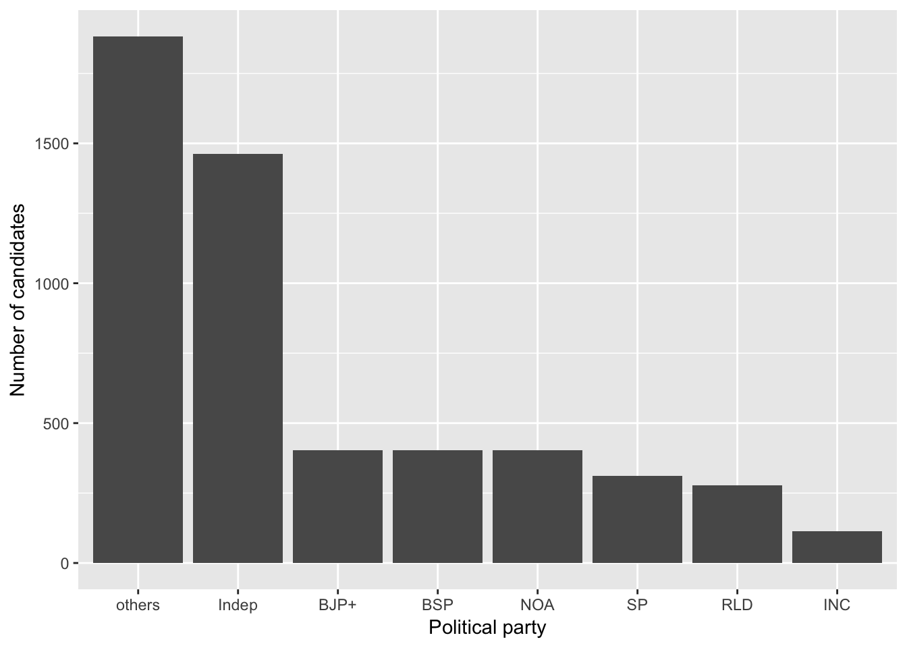
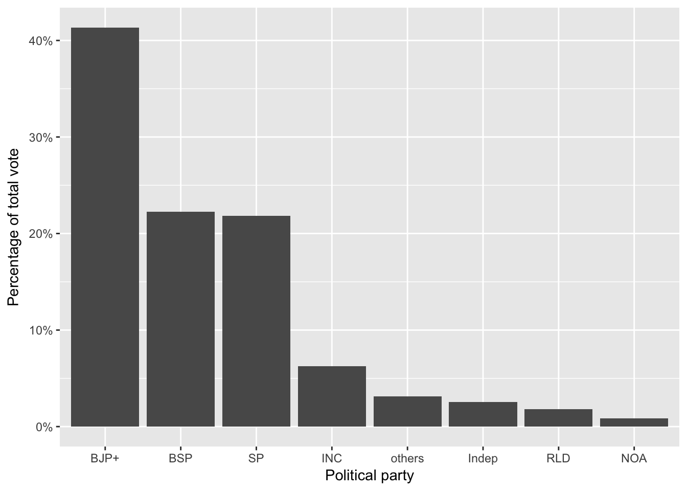
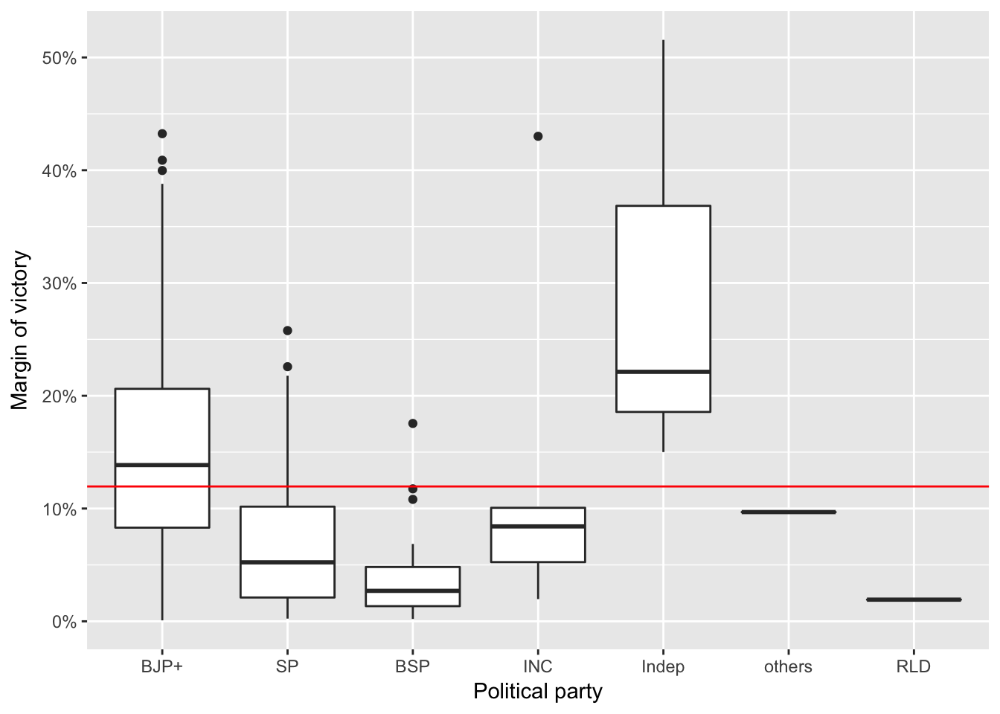
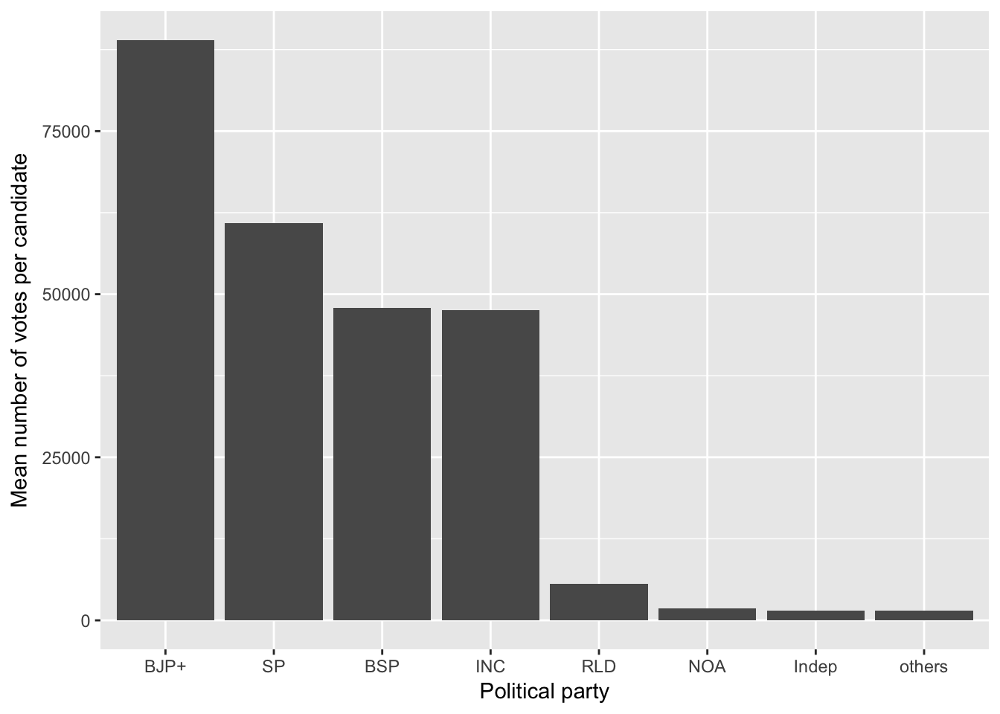
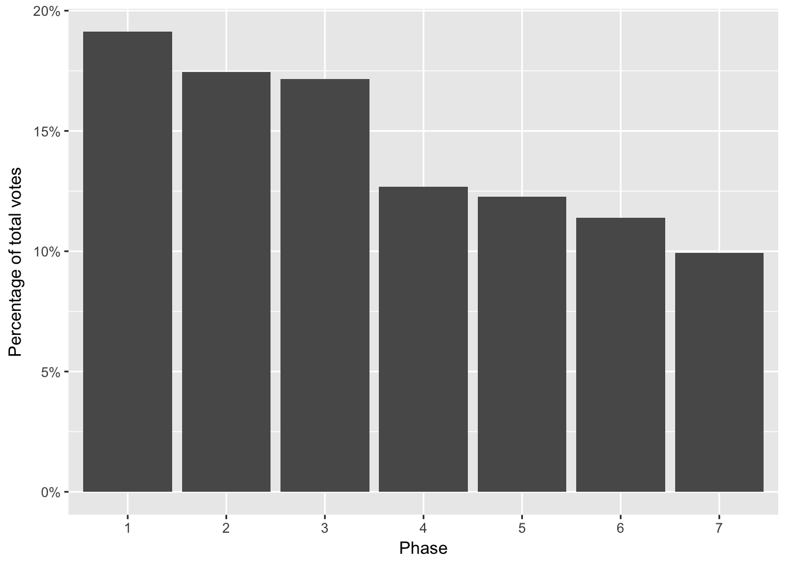
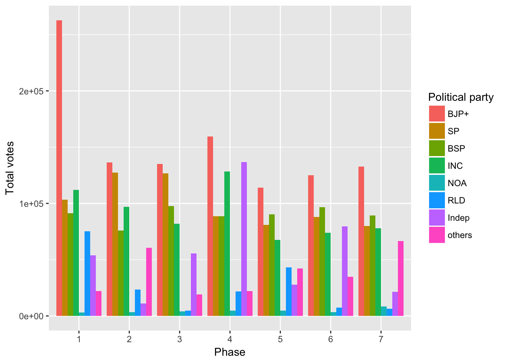

Dataset
The dataset for this analysis was obtained from Kaggle. It contains information about all candidates, their political affiliation, the number of votes they received, the names of constituencies, among other things.
Background
Uttar Pradesh (UP) is the largest state in India. In the recently concluded elections, 86.7 million votes were cast! That is nearly two-thirds of the number of votes cast in the 2016 US elections. State elections in this region are important for several reasons:
- Population: With a population of over 200 million it is, by far, the most populous state in India. It is larger than most countries in the world!
- National political sentiment: Although Indian elections are complex democratic processes, the outcome of UP elections can help gauge the general political milieu of the country.
Political Parties
Unlike US elections, state elections in India have several political players. There are two major national parties: the BJP (Bhartiya Janta Party) and the INC (Indian National Congress). Additionally, UP also has two prominent regional parties that have dominated the political landscape in the past decade: BSP (Bahujan Samaj Party) and SP (Samajwadi Party). The dataset also contains information about smaller parties such as RLD (Rashtriya Lok Dal), independent candidates, candidates from other smaller parties, and candidates that do not belong to any of the aforementioned categories (NOA). The following plot highlights the number of candidates from each party taking part in the election.

A large number of candidates were either from smaller parties (other) or independents. BJP and BSP had exactly 403 candidates, the number of seats or constituencies in UP. On the other hand, only 311 candidates were affiliated with SP. INC had even fewer candidates: 114. The reason for this was a political alliance between INC and SP. Only 25 seats out of 403 had candidates from both INC and SP. All other constituencies had candidates from one party but not from both.
Popular Vote and Election Results
Much like national elections in the US, popular vote does not determine the outcome of state elections in India. They are determined by the number of seats a party wins. It is possible for a party to win without getting the popular vote. This was not the case for the 2017 UP elections however. BJP won more than 40% of the total vote. BSP got a slightly large fraction of the vote than SP. They received only a little more than 50% of BJP’s votes. In a state historically dominated by regional parties, this was unprecedented.

Even more surprising was the number of seats won by each party. BJP won 325 out the 403 available seats. Despite getting a larger share of the overall vote, BSP won only 19 seats compared to SP’s 47. Rarely had a political party received an outright majority in UP.
| party | seats won |
|---|---|
| BJP+ | 325 |
| SP | 47 |
| BSP | 19 |
| INC | 7 |
| Indep | 3 |
| others | 1 |
| RLD | 1 |
Margin of victory
With such a landslide victory, one would expect BJP to also have large margins of victory. This was indeed the case. Their median margin of victory was over 13%! The more suprising observation, however, was BSP’s margin of victory. With their large share of popular vote (it more than SP) and small share of seats, we would expect their margin of victory to be high in the seats that they won. However, their median margin of victory was even smaller than SP’s median margin of victory.

The curious case of BSP
Second highest share of popular vote but only a 5.8% share of the seats - BSP’s UP election performance was puzzling. SP on the other hand had a slightly lower share of popular vote, but a much larger share of seats: 11.7%. A reason for the descrepancy between popular votes and seats won was that BSP had 403 candidates contesting in the election as opposed to SP’s 311. So while the total number of votes was higher for BSP, the average number of votes per candidate was lower than SP.

A story of phases
To handle such a large scale election, the election commission of India conducts the process in several stages. UP election 2017 was held in 7 phases. The phases corresponded to different geographical regions of the state.

Most votes were cast in the earlier phases. Only 10% of all votes were cast in the final phase. However, the results were consistent across all phases

Although BJP received the biggest fraction of vote across all phases, their margin of victory was vastly different. In phase 1 they received more than double the number of votes received by any other party. However, in phase 2 and phase 3, the race was much closer. The difference in the number of votes received by BJP and SP was a only few thousands! This is also reflected in the results. Phase 2 and phase 3 took place west UP where SP won a large percentage of their seats. (For more information see this Wikipedia page)
Another interesting observation is the large fraction of votes for independent candidates in phase 4 and phase 6. Out of the three constituencies where independents won, two were part of phase 4 and one was part of phase 6.